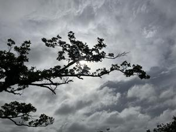
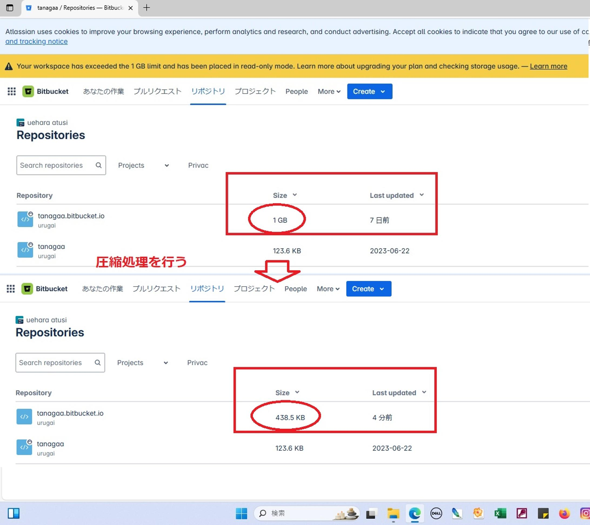

うるがいの話 ある日
最新: サイトの容量圧縮処理完了【うるがいの話 ある日】とは 一日だけのプログです
『うるがいの話』の最新一日だけのプログで、通信料が少なく経済的だ。カニの画像をクリックすると全ての日付が載る『うるがいの話』サイトを表示します
|
|
【うるがいの話】 うるがい(ｳﾙｶﾞｲ urugai)とは、『もずくがに』の名前でとても大きくなります。 |
|---|---|
|
|
【カミマヤーの話】 猫のことを方言でマヤーといいます。カミマヤー（kamimayaa）とは、神の猫のことです。 |
|
【たながぁの音楽】 たながぁ（ﾀﾅｶﾞｰ tanagaa）とは手長えびのことで、何種類かあり大きいのは車 エビぐらいになります。 |

|
【ぶながぁの話】 ぶながぁ(ﾌﾞﾅｶﾞｰ bunagaa)とは、赤い髪の毛、赤い身体、そして身長は１ｍ２０ｃｍ ぐらい、川の蟹を食べているの目撃された。場所は沖縄県国頭郡大宜味村のと ある村僕の隣近所に住んでいる爺さんから、聞いた話です。 |
|
|
【ギーマの話】 ギーマ(giima)とは、山原の里山に咲くスズランに似た、 花を付けます。実は食べられます、 気が付くと口の周りが紫になっています。 |
2025年07月24日 (木）サイトの容量圧縮処理完了
15:17

やっとこさ、サイトの容量を圧縮する作業を終えました。１Ｇから
４３８．５ＫＢへ、難儀した。楽譜データを、新規に作ったサイト
に移設したためリンク先を変更しなければならない。ま、大したこ
とはない・・・、アレ？、ユーチューブ動画のダウンロード先を変
更するのだが、半日以上かかった。

ま、これで後５年は持つでしょう。無料で利用できるサイズが、同
じ条件だったらだが。
ダブル台風が沖縄へ７号は夕方に宮古島に最接近、８号も２６日に
宮古へ 本島も強風域（７月２４日午前）
すごい、先ほど９号も発生している。台所の窓を、西日が当たるの
ふさいでいたカバーの紐が切れ、強風で外れバタバタした。慌てて
ナイロン製の紐え繋ぎとめる。なお、今回は台風対策していません